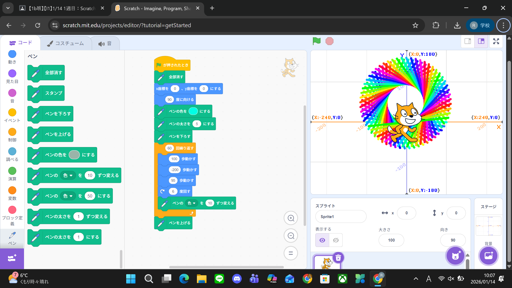
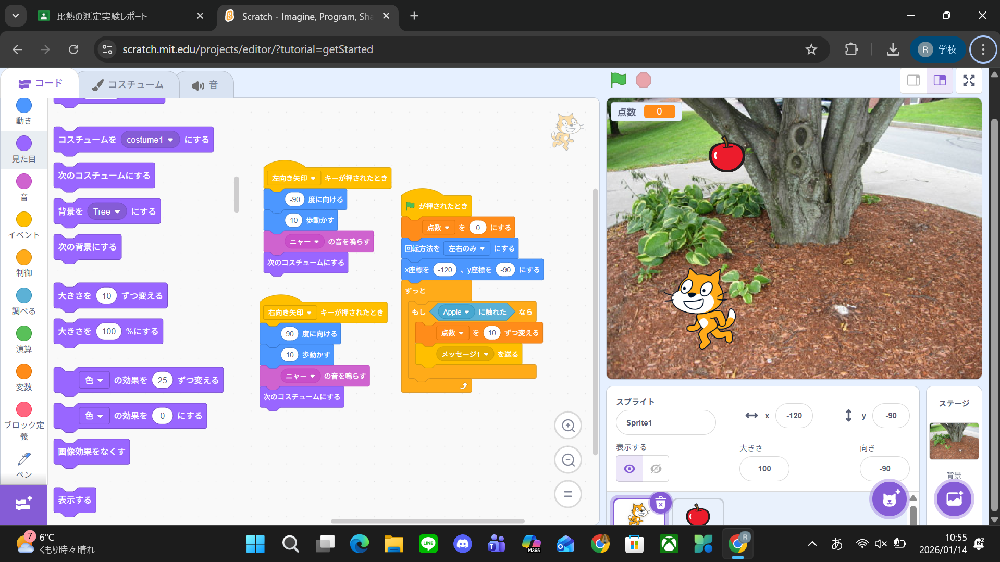

1週目のレポート ： 公大高専１年実習I-1
1b班26番 n3ssful
第1週目
1-1 サイエンスアート

1.内容
scratchを用いてスプライトを移動させるプログラムとスプライトの動きにあわせて線画を描写するプログラミングを実行することで幾何学的な模様を作成した。
2.感想
これまでにscratchを使ってプログラムを作成した経験はあったが、スプライトを動かすことまでしか挑戦したことがなかったので、
これまでの経験に加えてペンを使って模様を作成するという経験ができたので興味深かった。
1-2 ゲーム

1.内容
scratchを用いて猫のスプライトを矢印キーで左右に移動させるプログラムとりんごのスプライトをランダムに落とすプログラムを組み合わせ、猫のスプライトがりんごに当たるたびにポイントを得るゲームを作成した。
2.感想
scratchでゲームを作っていつも遊んでいるゲームの奥深さを感じた。今回の当たり判定はスプライト同士に触れた際にメッセージを送ることで消すといった方法だったがスプライト(的)が増えるFPSタイトルなどのプログラムはどうなっているのだろうと興味がわいた。
1-3 ホームページ作成
私のホームページ
1.内容
Githubを用いて、アカウントを作成したのち、与えられたテンプレートからhtmlの内容を設定して画像ファイルをアップロードするなどして自分のホームページを作成した。
2.感想
ホームページを作成するという経験が今までなかったので新鮮に感じたとともに
冬休みに情報の課題で学んだプロゲートのプログラミングで見たコードがこのように使われるのだと実際に見て学ぶことができたので良かった。
各ページへのリンク
1週目のレポート
2週目のレポート
3週目のレポート
私のホームページ